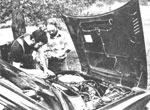
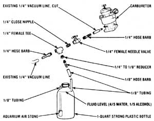

Ron Novak's Do-It-Yourself Water Injection System
You can improve your car engine's starting ability, pickup and fuel economy by constructing a homemade water injection system.
Mother Earth News editors
November/December 1979
You can improve your car engine's starting ability, pickup, and fuel economy by constructing a homemade water injection system ... for a total cost of under five dollars! And you'll spend that small amount of money (heck, it takes more cash than that to buy one tank of gas nowadays!) entirely on parts ... because all the information you'll need to "inject" your own auto is right here in this article!
MOTHER's staffers have installed and tested one of the "engine aids" (and, by jeepers, the thing works!), but we can't take the credit for inventing the build-it-yourself device. Nope, all the know-how for this half-hour (or less) shop project comes from a very generous-and clever -visitor to this magazine's seminars ... Mr. Ron Novak.
Ron openly shared his under-the-hood "secret"-during the July Mother Earth Week-with everyone who was interested. (And once the word of his brainstorm got out, the inventive fellow spent as much of his visit teaching as he did studying!)
Actually, Mr. Novak made two improvements to his 1978 Honda CVCC station wagon before he started the long trek from his upstate New York home to MOM's western North Carolina land. The traveling seminarian's major modification was to install a homemade water injection system that feeds a 4:1 H20/alcohol mist into his vehicle's carburetor ... but he also added a drag-reducing "air dam", under the Honda's front bumper, to further improve his car's gas mileage. [EDITOR'S NOTE: MOTHER's ever-busy researchers are hoping to report-in an upcoming issue-on this second (the "fender extender') idea.]
Ron got the notion for his water injector from some automotive magazine advertisements that offered a $50 fuel-saving device. The canny Nor'-easterner carefully read the literature about the expensive accessory and realized that the mileage extender consisted of little more than a bottle (partly filled with some "miracle" solution) that was rigged with [1] an underwater air intake line that bubbled air through the liquid and [2] a mist-grabbing outflow tube to feed the "foamed-up" vapor directly into the engine's carburetor. The wet air was reputed to help produce more efficient fuel-burning (by "atomizing" the gasoline droplets and lowering the fuel's temperature) and to improve the power plant's overall performance and life span (by cleaning out the engine's carbon buildup).
Novak figured that he could make a similar fuel-saver himself ... if he could solve one problem: What "gadget" could he put on his underwater air tube to produce those myriad tiny air bubbles? Well, the tinkerer tried just about every device he could think of (including the pinched end of a cigarette holder), but-in spite of his efforts-the bubbler had him' stumped. For lack of one simple piece, Ron couldn't get the whole dang system to work!
Then one day, while the New Yorker was running an errand in a pet shop, he noticed a small aquarium "air stone" that was (what else?) busily breaking an incoming oxygen supply into tiny little bubbles ... to mix air into the fish tank's water. Ron bought one of the low-cost objects, attached it to his homemade injector's underwater tubing, and-eureka!-he was in business!
The entire installation procedure was easy, inexpensive, and legal (Ron didn't fiddle with his car's EPA emissions devices). And Novak's "new" water-injected Honda ran better-and further on one tank of gas-than it ever had in its life!
Since that first attempt, Ron has installed his "bubbling bottles" on all sorts of vehicles ... from a BMW R60/2 motorcycle ... to a 1973 Opel GT ... to a 1968 Cadillac. In each case, gas mileage improved dramatically! So, folks, there "ain't no reason" why you can't get better performance and gas mileage by building your own water injector ... no matter what form of gasoline-engined transportation you're driving! All you have to do is read this article's sidebar, head off to the nearest pet store for your "auto parts", and then get to work!
EDITOR'S NOTE: People who read about Pat Goodman's water injection system (see "Water Injection Wizardry" in MOTHER NO. 59, page 46) may wonder about the differences between Ron's homemade "carburetor squirter" and Pat's more sophisticated-and, of course, more expensive-device.
The most important functional distinction between the two is that Novak's injector"bubbles" most rapidly when the car is idling and least intensely when the vehicle's under full throttle. Goodman's smog pump-controlled instrument, on the other hand, increases its vaporizing activity with higher engine output. Pat's "mistifier" will therefore produce a much greater overall boost in gas mileage than the do-it-yourself device does ... but can only be added to a car that already has a smog pump. Ron's homemade system can be installed on just about any vehicle on the road today.

WATER INJECTION:6% GAS SAVINGS AND MORE POWER-FOR AS LITTLE AS $3.72
Installing a hydro-atomization system on your car-a modification which adds damp air to the engine's intake mixture and produces a variety of benefits-involves little more than the purchase of a three-inlet valve (such as a fish tank's air regulator), an aquarium air stone, five feet of eighth-inch clear tubing, and a strong plastic bottle ... plus about 15 minutes of under-the-hood tinkering.
When MOTHER's mechanics tackled the job, they were able to pick up all of the necessary pieces-with the exception of the $1.98 brass valve-at a local pet shop for only $1,74. The boys then simply drove around the corner and recycled a photochemical bottle from a trash bin behind a photo shop, stopped by a nearby plumbing supply store to pick up the three-way valve, and returned to the research center to actually install the parts ... which took just a shade over ten minutes.
You can begin your installation by splicing the valve into one of the vacuum lines which comes from the base of the carburetor. (In many cars the distributor advance hose would be the best choice for valve-insertion. However, the Honda Civic CVCC that MOTHER operated on has a very convenient quarter-inch vacuum line run ning to a fresh air valve, so MOTHER's crew tapped into that hose with their makeshift control.)
Next, securely suspend the liquid-containing bottle in the engine compartment. (In this case our research team fabricated a holder from an old coat hanger and bolted the assembly to an existing fastener on the left wheel well of the Honda.) Once your tank is in position, drill two eighth-inch holes in the top of the container ... one on each side of the cap. Then run a suitable length of the eighth-inch hose from the remaining outlet on the three-way valve to one of the eighth openings ... and allow a half inch of the tubing to enter the reservoir.
Now take the rest of your eighth-inch hose, insert it through the unoccupied eighth-inch hole, attach the air stone to the inside end of this line, and slide the aerator and tube into the bottle until it just touches bottom. The leftover eighth-inch line-which protrudes from the container-should be snipped off to about three inches in length.
Finally, fill the reservoir-to about an inch from the top-with a solution of four parts water to one part alcohol (the latter keeps the water from freezing in winter), start your motor, let it warm up, and then adjust the valve until a gentle bubbling comes from the air stone. Once that's done, it's time for a test drive!
MOTHER's researchers noted an immediate improvement in low-RPM power-which helped the Honda to accelerate up hills that had previously required a down shift-and a significant reduction in vibration. Better yet-after we ran three tanks of gas (and a quart of fluid) through the engine-the Civic's gas mileage jumped from 32 to 34 MPG. Plus, much to the auto owner's surprise, water injection cured a longstanding cold weather starting problem. In fact, the driver claims that the modification "paid for itself" with that starting improvement alone... and that, in his opinion, the power gain and gas savings are icing on the cake!
|
 STAFF PHOTO |
 |
|